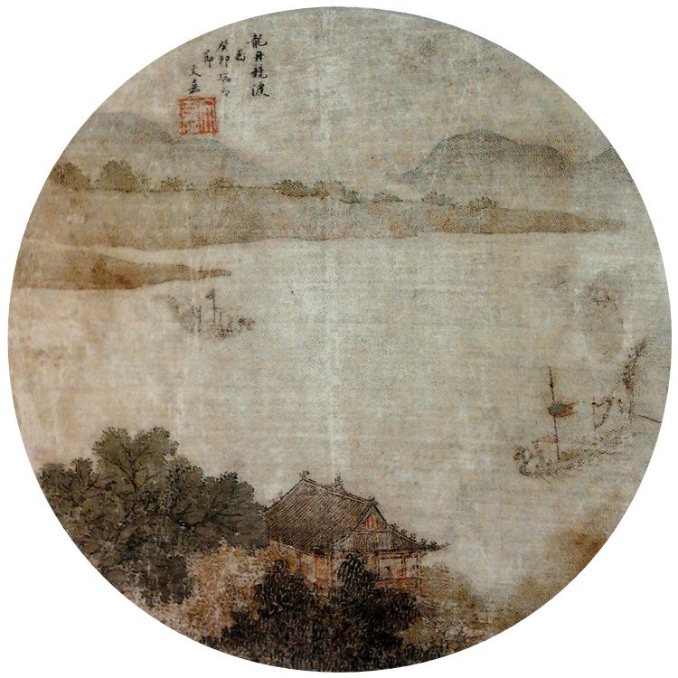

‘여행 흥미반’이 청년을 사로잡다… 中 새 학습·여가 트렌드
여행하며 배우는 ‘여행 흥미반(旅游兴趣班)’이 중국 청년층에서 인기를 끌고 있다. 취미·체험 학습과 여행을 결합한 새로운 여가·소비 방식으로 자리 잡는 모습이다.
양념자 기자 · 2026.06.28
橋중국

여행과 흥미 기반 학습을 결합한 ‘여행 흥미반’이 중국 젊은 층에서 새로운 트렌드로 떠올랐다고 중국 매체가 전했다. 단순 관광을 넘어 도예·요리·사진·전통문화 체험 등 ‘배우는 여행’을 즐기는 흐름이다.
광고 문의 · 300×250이 트렌드는 경험과 자기계발을 중시하는 청년 세대의 소비 성향을 반영한다. 짧은 일정 안에서 새로운 기술을 익히거나 지역 문화를 체험하며, 여행의 만족도와 의미를 함께 추구하는 것이다.
華橋時報는 이러한 문화·소비 현상을 통해 변화하는 청년층의 가치관을 전한다. 체험형 여행은 지역 관광과 소상공인, 문화 콘텐츠 산업에도 새로운 기회를 만든다.
‘배우는 즐거움’과 ‘떠나는 즐거움’을 결합한 여가 방식은 향후 관광 시장의 한 흐름으로 확산될 가능성이 있다.
출처: 環球網.
출처·참고 (사실 확인용 — 본문은 직접 재작성)
· 環球網
· 環球網